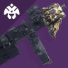
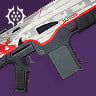
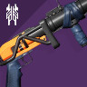
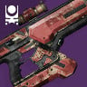
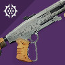
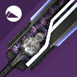
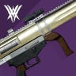

Last Wish
Equipment recommendations. They are not absolute and only serve a purpose of giving you a general guess about what you might want in every encounter.
General recommendations
Close and medium combat distances
Small and medium enemies
Boss DPS


Primary: your favourite gun
Primary weapons for add clear purposes



Special: Grenade Launchers / Fusions / Shotguns
Options to help with add clear and maybe add to boss DPS


Heavy: SWORD + Rocket Launcher
Sword is important! Vortex frame is the best, adaptive is second best